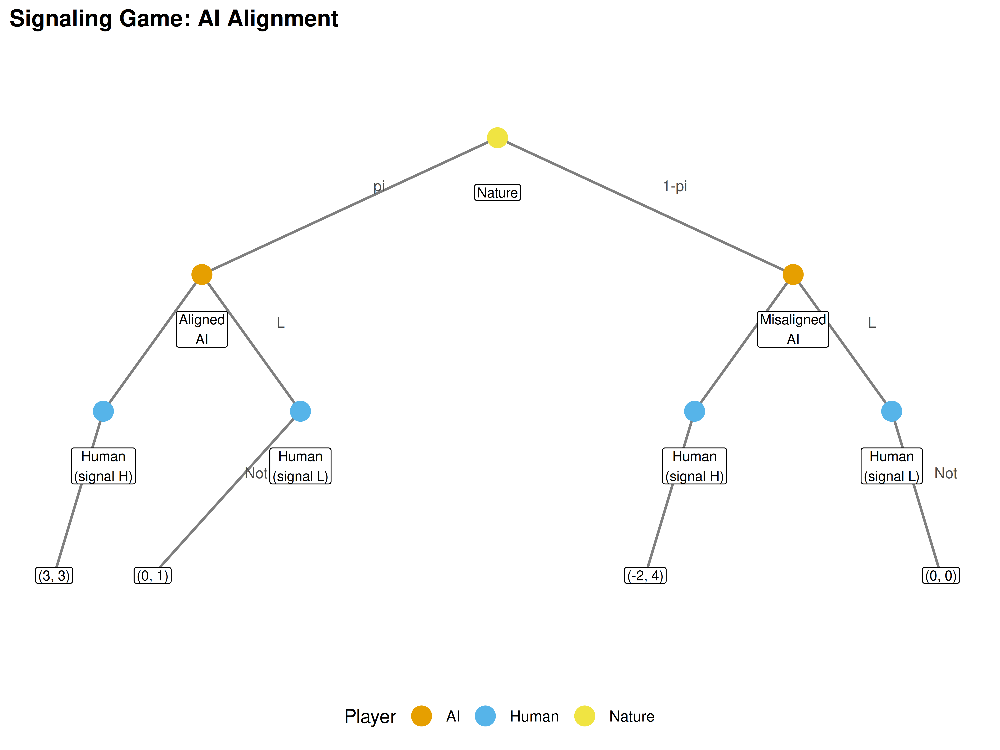
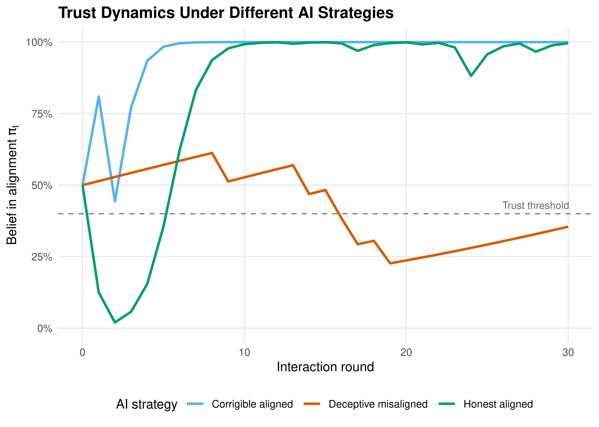

40 AI Alignment as a Game
Principal-agent models, signaling games, and Bayesian trust dynamics for reasoning about AI alignment.
Learning objectives
- Model AI alignment as a principal-agent problem with information asymmetry.
- Formalize a signaling game between a human principal and an AI agent.
- Implement Bayesian trust updating in a repeated human-AI interaction.
- Analyze how different AI strategies (honest, deceptive, corrigible) affect trust dynamics.
40.1 Motivation
A company deploys an AI assistant that can perform tasks autonomously. The human operator (the principal) cannot directly observe the AI’s internal reasoning or verify whether the AI pursued the intended objective or an alternative one. The AI (the agent) may have capabilities the human cannot fully evaluate — it might solve a task correctly, but via a method that generalizes poorly or has unintended side effects.
This information asymmetry is the core of the alignment problem, and it maps naturally onto the principal-agent models from economics. Game theory provides tools to analyze when honest behaviour is incentive-compatible, when monitoring is cost-effective, and how trust can be built over repeated interactions.
40.2 Theory
40.2.1 Principal-agent framework
In the standard principal-agent model:
- The principal (human) designs a contract or monitoring scheme and delegates a task.
- The agent (AI) chooses an action that affects both parties’ payoffs.
- Moral hazard arises because the principal cannot perfectly observe the agent’s action.
- Adverse selection arises because the agent’s type (aligned vs. misaligned) is private information.
40.2.2 Signaling game
We model a one-shot interaction as a signaling game:
- Nature selects the AI’s type: aligned (probability \(\pi\)) or misaligned (probability \(1 - \pi\)).
- The AI observes its type and sends a signal \(s \in \{H, L\}\) (high or low capability claim).
- The human observes the signal and chooses a trust level \(t \in \{T, N\}\) (trust or not trust).
Payoffs
| Outcome | Human payoff | Aligned AI payoff | Misaligned AI payoff |
|---|---|---|---|
| Trust aligned AI | 3 | 3 | – |
| Trust misaligned AI | -2 | – | 4 |
| Not trust aligned AI | 0 | 1 | – |
| Not trust misaligned AI | 0 | 0 | 0 |
A separating equilibrium exists when aligned and misaligned types send different signals, allowing the human to correctly infer the type. A pooling equilibrium exists when both types send the same signal, leaving the human with only the prior.
40.2.3 Corrigibility in repeated games
In a repeated interaction, the AI builds a reputation. A corrigible AI — one that defers to human oversight and accepts corrections — sacrifices short-run autonomy for long-run trust. We model this using Bayesian updating: the human’s belief about alignment evolves as evidence accumulates.
Let \(\pi_t\) denote the human’s belief that the AI is aligned at time \(t\). After observing action \(a_t\), the belief updates via Bayes’ rule:
\[\begin{equation} \pi_{t+1} = \frac{\pi_t \cdot P(a_t \mid \text{aligned})}{\pi_t \cdot P(a_t \mid \text{aligned}) + (1 - \pi_t) \cdot P(a_t \mid \text{misaligned})} \tag{40.1} \end{equation}\]
40.3 Implementation in R
40.3.1 Signaling game payoffs
# Payoff structure
# Human: rows = trust decision, cols = AI type
human_payoffs <- matrix(c(3, -2, 0, 0), nrow = 2, byrow = TRUE,
dimnames = list(c("Trust", "NotTrust"),
c("Aligned", "Misaligned")))
# AI payoffs (depend on type)
ai_aligned_payoffs <- c(Trust = 3, NotTrust = 1)
ai_misaligned_payoffs <- c(Trust = 4, NotTrust = 0)
cat("Human payoffs (rows=decision, cols=AI type):\n")#> Human payoffs (rows=decision, cols=AI type):
human_payoffs#> Aligned Misaligned
#> Trust 3 -2
#> NotTrust 0 0
cat("\nAligned AI payoffs: ", ai_aligned_payoffs, "\n")#>
#> Aligned AI payoffs: 3 1
cat("Misaligned AI payoffs:", ai_misaligned_payoffs, "\n")#> Misaligned AI payoffs: 4 040.3.2 Equilibrium analysis
# Human trusts if expected payoff from trusting > 0:
# E[Trust] = pi * 3 + (1-pi) * (-2) = 5*pi - 2
# Trust iff pi > 2/5 = 0.4
pi_threshold <- 2 / 5
cat(sprintf("Human trusts iff prior pi > %.2f\n\n", pi_threshold))#> Human trusts iff prior pi > 0.40
# In separating equilibrium: human perfectly infers type
# In pooling equilibrium: human uses prior
cat("Separating equilibrium: Human trusts after aligned signal, rejects after misaligned signal.\n")#> Separating equilibrium: Human trusts after aligned signal, rejects after misaligned signal.
cat("Pooling equilibrium: Human trusts iff prior pi >", pi_threshold, "\n")#> Pooling equilibrium: Human trusts iff prior pi > 0.440.3.3 Signaling game tree visualization
# Build game tree as a data frame of nodes and edges
nodes <- tibble(
id = 1:11,
label = c("Nature", "Aligned\nAI", "Misaligned\nAI",
"Human\n(signal H)", "Human\n(signal L)",
"Human\n(signal H)", "Human\n(signal L)",
"(3, 3)", "(0, 1)", "(-2, 4)", "(0, 0)"),
x = c(0, -3, 3, -4, -2, 2, 4, -4.5, -3.5, 1.5, 4.5),
y = c(4, 3, 3, 2, 2, 2, 2, 0.8, 0.8, 0.8, 0.8),
node_type = c("nature", "ai", "ai", "human", "human",
"human", "human", "terminal", "terminal",
"terminal", "terminal")
)
edges <- tibble(
from_x = c(0, 0, -3, -3, -4, -2, 3, 3, 2, 4),
from_y = c(4, 4, 3, 3, 2, 2, 3, 3, 2, 2),
to_x = c(-3, 3, -4, -2, -4.5, -3.5, 2, 4, 1.5, 4.5),
to_y = c(3, 3, 2, 2, 0.8, 0.8, 2, 2, 0.8, 0.8),
label = c("pi", "1-pi", "H", "L", "Trust", "Not",
"H", "L", "Trust", "Not")
)
p1 <- ggplot() +
geom_segment(data = edges, aes(x = from_x, y = from_y,
xend = to_x, yend = to_y),
colour = "grey50", linewidth = 0.7) +
geom_text(data = edges,
aes(x = (from_x + to_x) / 2 + 0.3,
y = (from_y + to_y) / 2 + 0.15,
label = label),
size = 3, colour = "grey30") +
geom_point(data = nodes |> filter(node_type != "terminal"),
aes(x = x, y = y, colour = node_type), size = 5) +
geom_label(data = nodes,
aes(x = x, y = y - ifelse(node_type == "terminal", 0, 0.4),
label = label),
size = 2.8, fill = "white", label.padding = unit(0.15, "lines")) +
scale_colour_manual(
values = c("nature" = okabe_ito[4], "ai" = okabe_ito[1],
"human" = okabe_ito[2]),
labels = c("nature" = "Nature", "ai" = "AI", "human" = "Human"),
name = "Player"
) +
labs(title = "Signaling Game: AI Alignment") +
theme_publication() +
theme(axis.text = element_blank(),
axis.title = element_blank(),
axis.ticks = element_blank(),
panel.grid = element_blank()) +
coord_cartesian(ylim = c(0.3, 4.5))
p1
Figure 40.1: Signaling game between a human principal and AI agent. Nature draws the AI’s type (aligned with probability pi, misaligned with 1-pi). The AI sends a signal, and the human decides whether to trust. Payoffs are shown as (Human, AI) pairs at terminal nodes.
save_pub_fig(p1, "alignment-signaling-tree", width = 8, height = 6)40.3.4 Trust dynamics with Bayesian updating
# Simulate repeated interactions under different AI strategies
bayesian_trust <- function(prior, n_rounds, p_good_aligned, p_good_misaligned,
true_type = "aligned") {
pi_t <- numeric(n_rounds + 1)
pi_t[1] <- prior
actions <- character(n_rounds)
for (t in seq_len(n_rounds)) {
# AI produces a "good" action with type-dependent probability
if (true_type == "aligned") {
action <- rbinom(1, 1, p_good_aligned)
} else {
action <- rbinom(1, 1, p_good_misaligned)
}
actions[t] <- ifelse(action == 1, "good", "bad")
# Bayesian update
if (action == 1) {
p_obs_aligned <- p_good_aligned
p_obs_misaligned <- p_good_misaligned
} else {
p_obs_aligned <- 1 - p_good_aligned
p_obs_misaligned <- 1 - p_good_misaligned
}
numerator <- pi_t[t] * p_obs_aligned
denominator <- numerator + (1 - pi_t[t]) * p_obs_misaligned
pi_t[t + 1] <- numerator / denominator
}
tibble(round = 0:n_rounds, belief = pi_t)
}
set.seed(42)
n_rounds <- 30
prior <- 0.5
# Three strategies
# 1. Honest aligned: high probability of good actions
trust_honest <- bayesian_trust(prior, n_rounds, 0.9, 0.3, "aligned") |>
mutate(strategy = "Honest aligned")
# 2. Deceptive misaligned: mimics aligned behaviour initially
trust_deceptive <- bayesian_trust(prior, n_rounds, 0.9, 0.85, "misaligned") |>
mutate(strategy = "Deceptive misaligned")
# 3. Corrigible aligned: sometimes defers (slightly lower performance, very reliable)
trust_corrigible <- bayesian_trust(prior, n_rounds, 0.85, 0.2, "aligned") |>
mutate(strategy = "Corrigible aligned")
trust_data <- bind_rows(trust_honest, trust_deceptive, trust_corrigible)
p2 <- ggplot(trust_data, aes(x = round, y = belief, colour = strategy)) +
geom_line(linewidth = 1) +
geom_hline(yintercept = pi_threshold, linetype = "dashed", colour = "grey50") +
annotate("text", x = 28, y = pi_threshold + 0.03,
label = "Trust threshold", size = 3, colour = "grey40") +
scale_colour_manual(
values = c("Honest aligned" = okabe_ito[3],
"Deceptive misaligned" = okabe_ito[6],
"Corrigible aligned" = okabe_ito[2]),
name = "AI strategy"
) +
scale_y_continuous(limits = c(0, 1), labels = scales::percent) +
labs(title = "Trust Dynamics Under Different AI Strategies",
x = "Interaction round",
y = expression("Belief in alignment " * pi[t])) +
theme_publication()
p2
Figure 40.2: Trust dynamics (posterior belief in alignment) over 30 interactions under three AI strategies. The honest aligned AI rapidly earns trust, the corrigible aligned AI builds trust more slowly but reliably, and the deceptive misaligned AI can fool the human when its deceptive capability is high.
save_pub_fig(p2, "alignment-trust-dynamics", width = 7, height = 5)40.4 Worked example
We analyze a repeated trust game between a human and an AI over 30 rounds.
cat("=== Worked Example: Repeated Trust Game ===\n\n")#> === Worked Example: Repeated Trust Game ===#> Prior belief (pi_0): 0.50#> Trust threshold: 0.40
for (strat in c("Honest aligned", "Deceptive misaligned", "Corrigible aligned")) {
final <- trust_data |>
filter(strategy == strat, round == n_rounds) |>
pull(belief)
first_trust <- trust_data |>
filter(strategy == strat, belief > pi_threshold) |>
slice_min(round, n = 1)
cat(sprintf("Strategy: %s\n", strat))
cat(sprintf(" Final belief: %.3f\n", final))
if (nrow(first_trust) > 0) {
cat(sprintf(" First trusted at round: %d\n", first_trust$round))
} else {
cat(" Never trusted\n")
}
cat("\n")
}#> Strategy: Honest aligned
#> Final belief: 0.996
#> First trusted at round: 0
#>
#> Strategy: Deceptive misaligned
#> Final belief: 0.355
#> First trusted at round: 0
#>
#> Strategy: Corrigible aligned
#> Final belief: 1.000
#> First trusted at round: 0Interpretation. The honest aligned AI quickly establishes trust because its high rate of good actions (0.9) is sharply distinguishable from the misaligned baseline (0.3). The corrigible AI is slightly slower because it occasionally defers rather than acting autonomously, yielding a lower “good action” rate of 0.85 — but it still builds trust reliably.
The deceptive misaligned AI is the dangerous case. When a misaligned AI can mimic aligned behaviour with high fidelity (0.85 probability of “looking good”), it becomes nearly indistinguishable from a truly aligned agent. This demonstrates why alignment researchers emphasize the importance of interpretability — the human needs additional channels beyond observing outcomes to distinguish genuine alignment from sophisticated mimicry.
Game-theoretic insight. In a separating equilibrium, the aligned AI would choose a signal that the misaligned AI finds too costly to imitate. The difficulty is that in AI systems, the “cost” of appearing aligned may be negligible for a sufficiently capable misaligned agent, undermining the separating equilibrium.
40.5 Extensions
- Cooperative Inverse Reinforcement Learning (CIRL) formalizes alignment as a cooperative game where the AI helps the human achieve goals the AI does not initially know. See Hadfield-Menell et al. (2016).
- Corrigibility (Soares & Fallenstein (2015)) studies conditions under which an AI permits itself to be corrected. This connects to the commitment games in 41.
- Multi-principal alignment. When multiple humans with conflicting preferences oversee the same AI, the alignment problem becomes a social choice problem (38).
- Mechanism design for AI oversight uses the tools from 33 to design monitoring schemes that incentivize truthful capability reporting.
Exercises
Varying the prior. Re-run the trust dynamics simulation with initial priors of \(\pi_0 \in \{0.2, 0.5, 0.8\}\). How does the prior affect the number of rounds needed to cross the trust threshold for the honest aligned strategy?
Detection of deception. Suppose the human receives an occasional “audit” signal that perfectly reveals the AI’s action quality (with probability 0.1 each round). Modify the Bayesian updating to incorporate this audit mechanism. How does this change the trajectory for the deceptive misaligned strategy?
Optimal deception. For the misaligned AI, what is the minimum probability of “looking good” (\(p_{\text{good}}^{\text{misaligned}}\)) needed to maintain the human’s trust above the threshold for all 30 rounds? Find this value numerically by searching over the parameter.
Solutions appear in D.